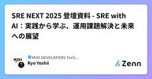

MIXI DEVELOPERS Tech Blogのフィード
https://zenn.dev/p/mixi
株式会社MIXIのZenn版テックブログです。実務で得た技術知見や個人的に調べたことなどを紹介しています。
フィード

SRE NEXT 2025 登壇資料 - SRE with AI：実践から学ぶ、運用課題解決と未来への展望
MIXI DEVELOPERS Tech Blogのフィード
こんにちは。ご機嫌いかがでしょうか。"No human labor is no human error" が大好きな吉井 亮です。2025年7月11〜12日に開催された SRE NEXT 2025 にて、登壇・発表した資料を公開します。https://sre-next.dev/2025/ SRE with AI：実践から学ぶ、運用課題解決と未来への展望 運用課題の解決弊社で実践した SRE with AI の取り組みのうち、公開できるものを紹介してます。 Amazon Bedrockを活用したPCI DSS要件の省力化PCI DSS 4.0.1 の要件の1つであ...
2日前

Claude Codeの公式DevContainerについて
MIXI DEVELOPERS Tech Blogのフィード
!この記事は人間が書きました。 はじめにClaude Code、みなさん使っていますよね。Claude Codeに危険なコマンドを実行されそうになったという経験をされた方も多いのではないでしょうか？Xなどでちらほらとルートディレクトリごと削除されたとか...さまざまな報告を見るようになりました。そういったケースを想定して、あらかじめコンテナ環境で実行させるという対応が必要かもしれません。今回はAnthropicが公式に提供しているClaude CodeのDevContainerについて紹介します。https://docs.anthropic.com/en/docs/...
8日前
GitHub ActionsのAnnotation定点観測のためのCI活用事例
MIXI DEVELOPERS Tech Blogのフィード
株式会社MIXIでサロンスタッフ予約サービス「minimo」のバックエンドエンジニアをしている鈴木です。minimoではGitHubのOrganization内で発生しているGitHub ActionsのAnnotation (エラーやWarning) をどのように定点観測しているかについてまとめます。 なぜ定点観測したいか 非推奨な記法やNode.jsのバージョンに気づきやすくなるhttps://github.blog/changelog/2022-10-11-github-actions-deprecating-save-state-and-set-output-comm...
10日前
Gemini CLIとClaude Codeを簡単に比較してみた
MIXI DEVELOPERS Tech Blogのフィード
!この記事は人間が書きました。 はじめにみなさん、こんにちはAIコーディングエージェントを活用していますか？私はようやく諸々のタスクがひと段落したためGemini CLIを触り始めました。リリースされてから1週間以上経ってしまいました...Gemini CLIについては色々な方がブログを投稿しており色々と参考にさせていただきました。今回はGemini CLIを触るに際して、せっかくならClaude Codeと比較してみようと考えました。今回の検証では同じタスクを実施してどのような違いがあるのかをみてみようと思います。 検証内容 概要Issueに記載されて...
15日前
actions/checkoutの後続のstepで認証情報を扱えないようにする
MIXI DEVELOPERS Tech Blogのフィード
株式会社MIXIでサロンスタッフ予約サービス「minimo」のバックエンドエンジニアをしている鈴木です。GitHub Actionsの actions/checkout で後続のstepで認証情報を扱えないようにする方法についてまとめます。 なぜ行う必要があるかactions/checkout の persist-credentials はデフォルトではtrueになっています。この場合、 actions/checkout が設定したGitの認証情報が残るため、後続のstepで悪意のあるコードが実行されると認証情報を悪用できてしまいます。これを防ぐため、 actions/che...
17日前
Claude Codeに似ているOpenHands CLIが出たので触ってみた
MIXI DEVELOPERS Tech Blogのフィード
!この記事は人間が書きました。 はじめにOpenHandsからClaude CodeのようにCLIで動作するOpenHands CLIがリリースされました。https://www.all-hands.dev/blog/the-openhands-cli-ai-powered-development-in-your-terminal今回は早速触ってみた感触などをお伝えできればと思います。 OpenHandsCLIとはhttps://x.com/allhands_ai/status/1934990437627936949OpenHandsはこれまでDocker環境とGU...
1ヶ月前
Claude Codeにセキュリティ診断をさせてみた
MIXI DEVELOPERS Tech Blogのフィード
!この記事は人間が書きました。 はじめにこんにちは、Claude Codeを使っていますか？私の観測範囲内でもClaude Codeを使っている人がどんどん増えてきています。他のAIコーディングエージェントから乗り換えている人も結構な人数いそうです。今回の記事ではClaude Codeに脆弱性の診断をさせてみました。診断の対象としたのは以前の記事でClaude Codeに作ってもらった以下のAIチャットボットのアプリケーションです。リポジトリはこちらhttps://github.com/shirochan/chatbot-created-by-claude-code...
1ヶ月前
Amazon EKS MCP Server を使ったら自分要らなかった話
MIXI DEVELOPERS Tech Blogのフィード
こんにちは。ご機嫌いかがでしょうか。"No human labor is no human error" が大好きな吉井 亮です。EKS 上であるサービスを起動させていたのですが、頻繁に HTTP 50x エラーを返しており少々困っていました。AWS が大量の MCP Server を提供しており、そのなかに EKS 用の MCP Server があることを思い出し、試してみました。https://awslabs.github.io/mcp/servers/eks-mcp-server/ Amazon Q CLI インストール特に意味は無いのですが、AWS への認証が楽そ...
1ヶ月前
Claude CodeにLangchain Academyを日本語訳させてみた
MIXI DEVELOPERS Tech Blogのフィード
はじめにこんにちはみなさんはClaude Codeを使っていますか？私は最近色々とClaude Codeを使って開発させたり壁打ち相手をさせたりドキュメントを書かせたりと様々な便利な体験をしております。これまでいくつもAIコーディングエージェントを利用検証してきましたが、その中でも個人的にはClaude Codeは一押しのツールです。今回の記事ではClaude CodeにLangChain Academyのリポジトリを日本語への翻訳をさせてみました。 LangChain Academyとはhttps://academy.langchain.com/LangChain...
1ヶ月前
サポート期限の過ぎた 3rd party の AWS AMI が、検証環境で起動できなくなって困った話
MIXI DEVELOPERS Tech Blogのフィード
3rd party 製の AWS AMI を使っていて困ったことがあり、同じような問題を記事にしている人もいなそうだったので、記事にしてみます。 発生したことあるプロジェクトではウェブサイトの管理にソフトA[1]を使っています。現在はソフトAのバージョンX系を使っていたのですが、このバージョンが End of Maintenance （以下、 EoM と省略します）になったということで、バージョンを上げる作業をすることとなりました。ソフトAのサーバーの構築には、ソフトAの開発会社が提供する 3rd party 製 AWS AMI を使っていました。今回、アップデート作業の万全...
1ヶ月前
ユーザー認証における脅威分析のための2つの軸
MIXI DEVELOPERS Tech Blogのフィード
ritouです。MIXI IDのあたりを担当しています。 背景近年、証券会社のアカウント乗っ取りに代表される不正ログイン事案が社会の注目を集めており、ユーザー認証に対する不安が急速に広がっています。世の中には多種多様な認証方式が存在しますが、往々にしてネガティブな側面が強調されがちで「パスワード認証は危ない」「多要素認証も中間者攻撃で突破される可能性がある」「パスキーは安全だと聞くけれど、いまいち使いづらい」といった声が散見されています。認証方式を比較するマトリックスを作っても「この方式はこの攻撃に弱い」といったところが気になってしまい、どれがどれぐらい安全なのか、安全に利用する...
2ヶ月前
Amazon Q CLI でサッカーのPKゲームを作ってみた
MIXI DEVELOPERS Tech Blogのフィード
こんにちは。ご機嫌いかがでしょうか。"No human labor is no human error" が大好きな吉井 亮です。面白そうな企画を見つけました。すでに多くの方がゲームを作っているようで、私もチャレンジしてみました。https://aws.amazon.com/jp/blogs/news/build-games-with-amazon-q-cli-and-score-a-t-shirt/ 準備上のリンクに書かれている通りの手順を実行します。AWS Builder ID に登録してから、Amazon Q CLI と PyGame をインストールしました。VS...
2ヶ月前
Amazon Bedrock経由でClaude Codeを使ってみよう
MIXI DEVELOPERS Tech Blogのフィード
はじめにみなさんClaude Codeは使っていますか？Claude Codeとは、開発者がターミナルから直接Claudeに複雑なコーディングタスクを委譲できるAIエージェントツールです。Claude Codeについては以下のブログをご覧ください。https://zenn.dev/mixi/articles/daee52c49e739b今回はClaude CodeをAmazon Bedrock経由で使う方法を簡単に解説します。 セットアップ Claude CodeClaude Code自体のインストールは上記のブログを参考に行なってください。簡単に書くとnpmコマ...
2ヶ月前
Claude CodeのVSCode統合でAIチャットボット開発を体験してみた
MIXI DEVELOPERS Tech Blogのフィード
はじめに先日のCode with Claudeにて発表された内容にClaude Codeの正式リリースがありました。Claude Codeは、開発者がターミナルから直接Claudeに複雑なコーディングタスクを委譲できるAIエージェントツールです。さらにVSCodeなどのIDEとClaude Codeを直接統合できるようになり、開発体験が向上しました。今回はそんなClaude CodeをVSCodeに統合して実際にAIチャットボットの開発を行ってみました。Claude Code自体については以前書いた記事に詳細を載せていますのでそちらも参照してください。https://zenn...
2ヶ月前
Firebase Dynamic Links Short Links API -> AppsFlyer OneLink API 移行
MIXI DEVELOPERS Tech Blogのフィード
概要Firebase DynamicLinks が2024/8/25でサービス終了を受けて家族アルバム みてね(以下、みてね)では Firebase DynamicLinks Short Links API（Short Links API） から AppsFlyer OneLink API（OneLink API）に移行したので実装方法についてまとめますFirebase Dynamic Links から AppsFlyer への移行の全般的なことは AppsFlyer にもドキュメントありますhttps://support.appsflyer.com/hc/ja/ar...
2ヶ月前
Generative AI Lens - AWS Well-Architected Frameworkを読んでこれからの運用に役立てる
MIXI DEVELOPERS Tech Blogのフィード
こんにちは。ご機嫌いかがでしょうか。自称 ”Well-Archおじさん” の 吉井 亮です。アメリカ時間の2025年4月15日に Well-Architected Framework の Generative AI Lens が発表されました。https://docs.aws.amazon.com/wellarchitected/latest/generative-ai-lens/generative-ai-lens.html自分の勉強がてら要約します。要約は LLM 無し、人間の力です。 Generative AI Lens のスコープWell-Architected ...
2ヶ月前
GitHub Copilot Coding Agent でAWS構成図を書いてみた
MIXI DEVELOPERS Tech Blogのフィード
こんにちは。ご機嫌いかがでしょうか。"No human labor is no human error" が大好きな吉井 亮です。GitHub Copilot に新機能がリリースされました。https://github.blog/jp/2025-05-20-github-copilot-meet-the-new-coding-agent/主な機能はこんなところでしょうか。GitHub にネイティブ統合：Issue を割り当てるだけで起動。日常のワークフローを変えずに AI 自動化作業を導入。安全な GitHub Actions 環境： エージェントは自前ブランチしか p...
2ヶ月前
HCP Terraformで、子モジュールにprovider設定を書いた後にルートモジュールに移動させても、stateが変化しないことがある
MIXI DEVELOPERS Tech Blogのフィード
発生条件が特殊で、 Web をいくら検索しても同じ問題が発生している人を見かけなかったので[1]、記事にしてみます。 3行でHCP Terraform で、誤って子モジュールに provider alias の宣言をしていたのをルートモジュールに移動させたところ、 terraform state に反映されなかったHCP Terraform の "Refresh state" を実行したところ、 terraform state が更新され、ルートモジュールの provider が使われるようになったlocal backend では再現しなかったので、 HCP Terrafo...
2ヶ月前
MagicPodではAI要約のためにもコメントを入れようと思った話
MIXI DEVELOPERS Tech Blogのフィード
AI要約機能MagicPodで生成AIによるテストケース要約機能（以下、AI要約）が使えるようになり、約1年が経ちました。https://prtimes.jp/main/html/rd/p/000000043.000027392.htmlこれまではテストの内容を確認するために、テストケース編集画面を開いてテストの内容を読み込むか、説明欄に手動で情報を記入する必要がありましたが、AI要約の登場によりこれらの手間が軽減されました。 うまく要約されないテストケースほとんどのテストケースはいい感じに要約されます。ただ、1つだけうまくいっていない…どころかハルシネーションが起きて...
2ヶ月前
モンストWebショップの裏側：“商品購入”が完了するまで
MIXI DEVELOPERS Tech Blogのフィード
MIXI M事業部エンジニアの田代です。モンストWebショップ（以下Webショップ）は、モンスターストライク（以下モンスト）のアプリ外課金を実現するためのサイトです。MIXI M事業部が主体となり、モンストチームと連携して開発・運用しています。https://webshop.monster-strike.com/この記事ではWebショップにおける、購入の管理について焦点を当てて説明していきます。 Webショップシステム構成はじめにWebショップのシステム構成について説明します。Webショップは複数のシステムを組み合わせて実現しています。それぞれのシステムについて説明します。...
2ヶ月前